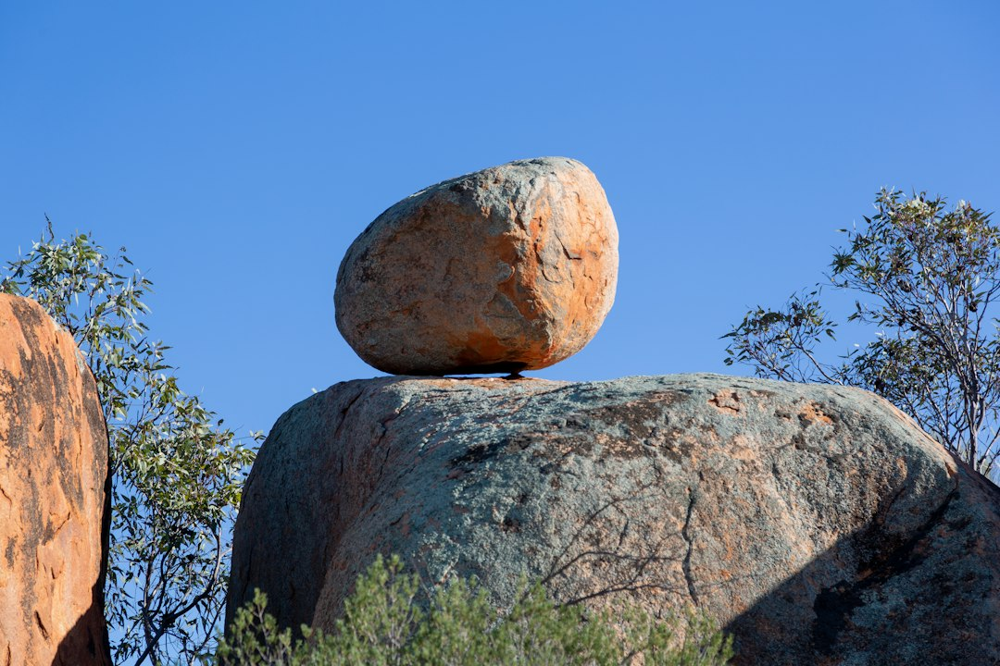

Australia's oversized roadside landmarks are best treated as route choices, not a race to collect every photo stop. The published guide gives 5 main ways in, directory, state browsing, category browsing, articles and about material. It names 2 examples, the Big Banana and the Giant Koala, and carries a 2026 footer. Use those clues to choose stops that fit the drive, the group and the reason for visiting.
For travellers comparing australian big things as possible stops, the useful question is which landmarks fit the route, the season, the vehicle stop and the reason for visiting.
Australian Big Things Explained
Big Thing Bible frames oversized landmarks as places to discover, explore and visit. That is a helpful starting point because a large object beside a highway can be a quick photograph, a rest break, a town marker or the reason for a short detour.
The published guide defines these attractions as large-scale sculptures and structures that have become iconic roadside attractions. Read that definition with a traveller's eye. A stop earns a place when it fits the day's driving, has enough context to make sense to the group, and adds something beyond another delay.
Use the guide as a filter. Start with the journey you already need to make, then decide whether an oversized landmark improves it. A family holiday, a regional loop and a photo-focused weekend will produce different shortlists.
Who this applies to
This guide suits road-trippers, families building a school holiday route, travellers collecting unusual landmarks and locals trying to understand why a familiar oversized object keeps appearing in travel lists.
- Route planners can begin with state browsing when distance and sequencing are the hard limits.
- Theme-led travellers can use category browsing when the type of structure matters more than the state.
- First-time visitors can read background articles before turning a landmark into a destination.
- Repeat travellers can use the directory to find gaps, then remove stops that create awkward detours.
When a trip narrows from national browsing to one state, a page on big things Queensland can sit beside the broader shortlist.
State browsing versus category browsing
The published guide offers both state and category paths. State browsing answers a practical map question: what sits near the planned drive. Category browsing answers an interest question: what kind of oversized object is worth seeking out.
Choose the state path when accommodation, road direction or available time is already fixed. It keeps each landmark in relation to the next stop, rather than creating a scattered list from every famous example in the country.
Choose the category path when the object type is the attraction. A traveller interested in fruit landmarks, animal forms or other recognisable structures may learn more by comparing themes before choosing a route.
What makes a stop worth adding
The published guide says these landmarks celebrate Australia's culture and larrikin spirit. A useful stop should be legible in that spirit. Travellers should be able to understand what is being celebrated, why the object belongs in that place and how it changes the feel of the drive.
Before adding a stop, ask:
- Does it sit naturally on the day's route?
- Is it a quick photograph, a longer town break or a destination in its own right?
- Will the people travelling understand the joke, subject or local identity?
- Is there article or directory context to explain the visit?
Novelty fades quickly when the object has no story. Context turns scale into memory.
Using famous examples carefully
The published guide names the Big Banana and the Giant Koala as examples. Those two names show the range of australian big things without making fame the only measure. A fruit landmark and an animal landmark promise different kinds of recognition, humour and local character.
A quieter structure can be the better choice if it appears at the right point in the drive. A better known stop can be the wrong choice if reaching it breaks the day. Judge each landmark by fit, not by reputation alone.
The published material gives a national frame, a directory structure and a small set of examples. It does not claim that every oversized object is equally important, open at all times or suitable for every itinerary.
A practical planning checklist
Start with the directory when the aim is discovery. Move to state browsing when the route has boundaries. Use category browsing when the theme matters more than the map. Read articles when a landmark needs context before it deserves time in the plan.
- Choose the trip type, such as quick stop, family break or landmark-focused route.
- Decide whether state or category browsing answers the first planning question.
- Shortlist only the stops that fit the day's travel pattern.
- Use article context where available so the visit has a story.
- Cut any stop that crowds the schedule or creates an awkward detour.
A strong itinerary leaves room for the oddness that makes these places appealing.
- Set the route first. Decide whether the trip is state-based, category-led or built around memorable breaks in a longer drive.
- Shortlist stops. Keep only landmarks that fit the route and have enough context to justify the stop.
- Add background. Use article material where available so the visit has a story, not just a photograph.
- Review the final day plan. Remove stops that create awkward detours or crowd the schedule.
| Option | Best when | Main question |
|---|---|---|
| Browse by state | The route is already set | Which landmarks sit near the trip path? |
| Browse by category | The object type is the attraction | Which oversized themes are most interesting? |
| Read articles | The stop needs context | Why does this landmark matter beyond a photo? |
| Use the directory | The traveller is still exploring | What options exist before narrowing the list? |
Common questions
What are Australia's oversized roadside landmarks? The published guide describes them as large-scale sculptures and structures that have become iconic roadside attractions. It names the Big Banana and Giant Koala as examples.
Should I browse by state or by category? Browse by state when the route is already set. Browse by category when the type of landmark is the main interest and the route can still change.
Is every large roadside object worth a detour? No. Favour landmarks that fit the day, add context and suit the people travelling.
Should travellers check details before leaving? Yes. The published guide is a discovery and planning resource, so practical visit details should still be checked before relying on any stop.
This guide covers practical ways to assess oversized Australian roadside landmarks using the published guide's directory, state, category and article structure.